非遗图鉴 / 梨园粉墨
04
非遗图鉴 · 传统戏剧
梨园粉墨
传统戏剧 · 171 项、473 子项 · 第 1 / 3 页（Ⅳ-1 至 Ⅳ-60）
每一条只列名录上的事实：编号、名称、申报地区或单位、公布年份和批次。详情看中国非物质文化遗产网的官方页。在名录检索里查这一门类 →
- Ⅳ-1
昆曲
Kunqu performance at the Peking University图：Antonis SHEN / CC BY-SA 2.0 / 维基共享资源。本站已缩放裁切，按 CC BY-SA 2.0 同样许可共享。 - Ⅳ-2
梨园戏
- 福建省泉州市2006 第一批 · 新增项目官方页 →
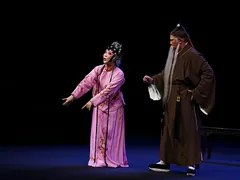
梨园戏《朱买臣》剧照。曾静萍饰赵小娘图：三猎 / CC BY-SA 4.0 / 维基共享资源。本站已缩放裁切，按 CC BY-SA 4.0 同样许可共享。 - Ⅳ-3
莆仙戏
- 福建省莆田市2006 第一批 · 新增项目官方页 →
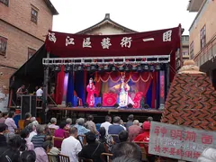
莆仙戲图：yuen yan / CC BY-SA 2.0 / 维基共享资源。本站已缩放裁切，按 CC BY-SA 2.0 同样许可共享。 - Ⅳ-4
潮剧
舞台上的潮剧演员图：Polar1 / CC BY-SA 3.0 / 维基共享资源。本站已缩放裁切，按 CC BY-SA 3.0 同样许可共享。 - Ⅳ-5
弋阳腔
- 江西省弋阳县2006 第一批 · 新增项目官方页 →
- Ⅳ-6
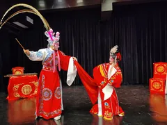
周瑜掀开小乔盖头后不久图：Augoustoshai / CC BY-SA 4.0 / 维基共享资源。本站已缩放裁切，按 CC BY-SA 4.0 同样许可共享。 - Ⅳ-7
- Ⅳ-8
新昌调腔
- 浙江省新昌县2006 第一批 · 新增项目官方页 →
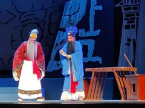
调腔历史剧《程婴救孤》图：Augusthaiho / CC BY-SA 4.0 / 维基共享资源。本站已缩放裁切，按 CC BY-SA 4.0 同样许可共享。 - Ⅳ-9
宁海平调
- 浙江省宁海县2006 第一批 · 新增项目官方页 →
- Ⅳ-10
永安大腔戏
- 福建省永安市2006 第一批 · 新增项目官方页 →
- Ⅳ-11
- Ⅳ-12
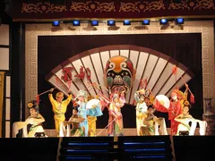
Sichuan Opera in Wuhou Temple Photo by Dice 2006.06.21图：无法识别作者。根据版权声明推断作者为Dice~commonswiki。 / CC BY-SA 3.0 / 维基共享资源。本站已缩放裁切，按 CC BY-SA 3.0 同样许可共享。 - Ⅳ-13
- Ⅳ-14
广昌孟戏
- 江西省广昌县2006 第一批 · 新增项目官方页 →
- Ⅳ-15
正字戏
- 广东省陆丰市2006 第一批 · 新增项目官方页 →
- Ⅳ-16
秦腔
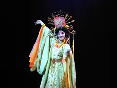
陕西秦腔，位于中国陕西易俗大劇院图：tfkt12 / CC BY 2.0 / 维基共享资源。本站已缩放裁切。 - Ⅳ-17
汉调桄桄
- 陕西省汉中市2006 第一批 · 新增项目官方页 →
- Ⅳ-18
晋剧
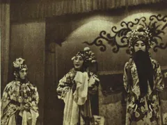
1952 晋剧 打金枝图：《人民画报》 / Public domain / 维基共享资源。本站已缩放裁切。 - Ⅳ-19
- Ⅳ-20
- Ⅳ-21
- Ⅳ-22
- Ⅳ-23
- Ⅳ-24
宛梆
- 河南省内乡县2006 第一批 · 新增项目官方页 →
- Ⅳ-25
怀梆
- 河南省沁阳市2006 第一批 · 新增项目官方页 →
- Ⅳ-26
- Ⅳ-27
- Ⅳ-28
京剧
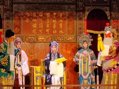
李艳妃——王璨。杨波——范永亮图：Augoustoshai / CC BY-SA 4.0 / 维基共享资源。本站已缩放裁切，按 CC BY-SA 4.0 同样许可共享。 - Ⅳ-29
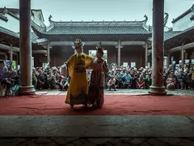
徽戏--拍摄于绩溪家朋图：清溪 / CC BY-SA 2.5 / 维基共享资源。本站已缩放裁切，按 CC BY-SA 2.5 同样许可共享。 - Ⅳ-30
汉剧
- 湖北省武汉市2006 第一批 · 新增项目官方页 →
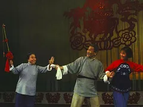
1966-01 汉剧借牛图：《人民画报》 / Public domain / 维基共享资源。本站已缩放裁切。 - Ⅳ-31
- Ⅳ-32
泰宁梅林戏
- 福建省泰宁县2006 第一批 · 新增项目官方页 →
- Ⅳ-33
闽西汉剧
- 福建省龙岩市2006 第一批 · 新增项目官方页 →
- Ⅳ-34
巴陵戏
- 湖南省岳阳市2006 第一批 · 新增项目官方页 →
- Ⅳ-35
- Ⅳ-36
- Ⅳ-37
桂剧
- 广西壮族自治区2006 第一批 · 新增项目官方页 →
- Ⅳ-38
宜黄戏
- 江西省宜黄县2006 第一批 · 新增项目官方页 →
- Ⅳ-39
- Ⅳ-40
石家庄丝弦
- 河北省石家庄市2006 第一批 · 新增项目官方页 →
- Ⅳ-41
雁北耍孩儿
- 山西省大同市2006 第一批 · 新增项目官方页 →
- Ⅳ-42
灵丘罗罗腔
- 山西省灵丘县2006 第一批 · 新增项目官方页 →
- Ⅳ-43
- Ⅳ-44
- Ⅳ-45
闽剧
- 福建省福州市2006 第一批 · 新增项目官方页 →
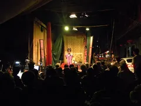
公元2015年4月30日（农历三月十二）福州裴仙宫前闽剧图：Davidzdh / CC BY-SA 4.0 / 维基共享资源。本站已缩放裁切，按 CC BY-SA 4.0 同样许可共享。 - Ⅳ-46
寿宁北路戏
- 福建省寿宁县2006 第一批 · 新增项目官方页 →
- Ⅳ-47
西秦戏
- 广东省海丰县2006 第一批 · 新增项目官方页 →
- Ⅳ-48
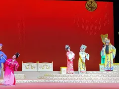
玉珠串：这班结局。银娘被封为公主，柳青配给银娘图：Augusthaiho / CC BY-SA 4.0 / 维基共享资源。本站已缩放裁切，按 CC BY-SA 4.0 同样许可共享。 - Ⅳ-49
- Ⅳ-50
- Ⅳ-51
评剧
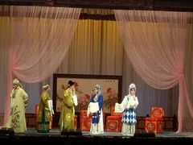
评剧桃花庵，天津中国大戏院图：刻意 / CC BY-SA 3.0 / 维基共享资源。本站已缩放裁切，按 CC BY-SA 3.0 同样许可共享。 - Ⅳ-52
武安平调落子
- 河北省武安市2006 第一批 · 新增项目官方页 →
- Ⅳ-53
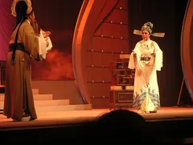
越剧《白罗衫》 Two actresses in a Shaoxing opera performance. The actress in white is Fan Xiaop…图：onion83 / CC BY 2.0 / 维基共享资源。本站已缩放裁切。 - Ⅳ-54
沪剧
- 上海市2006 第一批 · 新增项目官方页 →
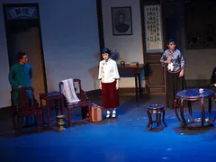
A Shanghai opera performance of Thunderstorm (大雷雨)图：https://www.flickr.com/photos/univers-finder/ 陈文 / CC BY 2.0 / 维基共享资源。本站已缩放裁切。 - Ⅳ-55
苏剧
- 江苏省苏州市2006 第一批 · 新增项目官方页 →
- Ⅳ-56
百岁挂帅·登高丘图：Augoustoshai / CC BY-SA 4.0 / 维基共享资源。本站已缩放裁切，按 CC BY-SA 4.0 同样许可共享。 - Ⅳ-57
- Ⅳ-58
吴明戴罪押往京城图：Augustohai / CC BY-SA 4.0 / 维基共享资源。本站已缩放裁切，按 CC BY-SA 4.0 同样许可共享。 - Ⅳ-59
荆州花鼓戏
- 湖北省潜江市2006 第一批 · 新增项目官方页 →
- Ⅳ-60